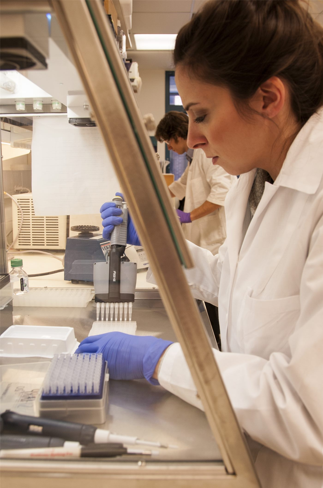

세계 첫 사례… 암 걸린 대형 비단뱀, '전기 펄스 화학요법'으로 살아났다
암에 걸린 대형 비단뱀이 전기 펄스를 이용한 화학요법으로 치료돼 목숨을 건졌다. 파충류에 이 방식이 적용된 것은 세계 처음으로 보고됐다. 약물 투여량을 줄이면서 종양 부위에만 작용하도록 하는 기법이다.
정가호 기자 · 2026.08.24
橋사회

암 진단을 받은 대형 비단뱀이 전기 펄스를 이용한 화학요법(electrochemotherapy)으로 치료받아 회복했다. 파충류에 대한 적용 사례로는 세계 처음으로 보고됐다.
광고 문의 · 300×250전기 펄스 화학요법이란
이 기법은 항암제를 투여한 뒤 종양 부위에 짧고 강한 전기 펄스를 가하는 방식이다. 전기 자극이 세포막의 투과성을 일시적으로 높여, 약물이 종양 세포 안으로 더 잘 들어가도록 만든다.
장점은 전신에 퍼지는 약물의 양을 줄일 수 있다는 데 있다. 같은 효과를 내면서 투여량이 적으면 부작용 부담이 줄어든다. 사람과 반려동물 종양 치료에서는 이미 쓰여 온 방식이다.
파충류라는 조건
파충류는 대사 속도와 체온 조절 방식이 포유류와 달라, 약물 대사와 마취 관리가 까다롭다. 항암 치료의 표준 프로토콜도 사실상 없는 상태였다. 이번 사례는 그런 조건에서 국소 치료 기법이 적용 가능하다는 점을 보여준다.
다만 한 마리의 성공 사례를 일반화하기는 이르다. 종별 차이와 종양 유형에 따른 반응, 장기 예후는 추가 사례가 쌓여야 확인된다.
동물 의료에서 축적되는 이런 기법은 사람 치료로 되돌아오는 경우도 있다. 대상의 조건이 극단적일수록 기법의 한계와 안전 범위가 선명하게 드러나기 때문이다.
출처·참고 (사실 확인용 — 본문은 직접 재작성)
· 自由時報 (2026.08.22)
· 自由時報 (2026.08.22)